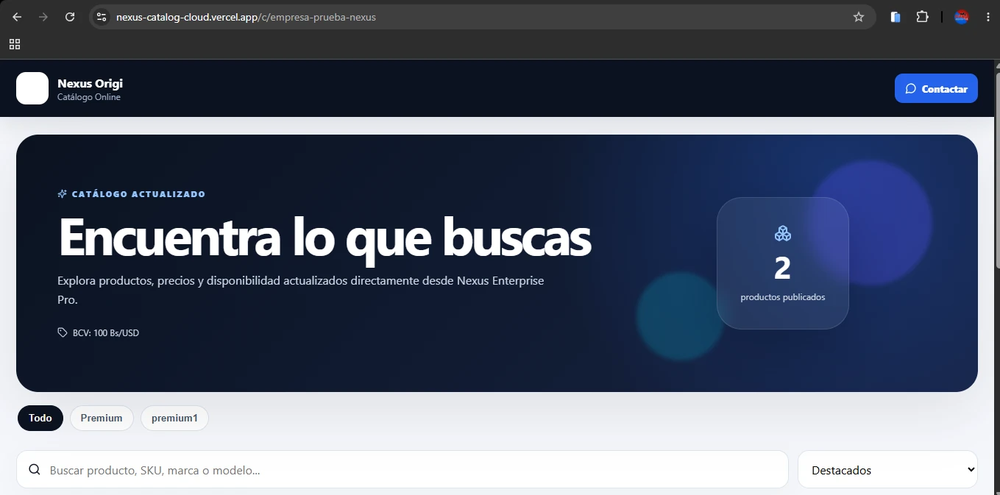

No expone tu caja
El catálogo público no necesita publicar costos, utilidad, usuarios ni información financiera privada.
Extensión web del ecosistema Nexus para publicar productos, precios y disponibilidad sin convertir la operación local en dependiente de internet.

El catálogo consume información pública publicada desde Nexus: producto, precio, disponibilidad, fotografías y organización comercial.
El catálogo público no necesita publicar costos, utilidad, usuarios ni información financiera privada.
La operación de Nexus Enterprise Pro no depende del catálogo para procesar ventas.
La experiencia visual puede adaptarse a la identidad del negocio sin cambiar el motor de sincronización.